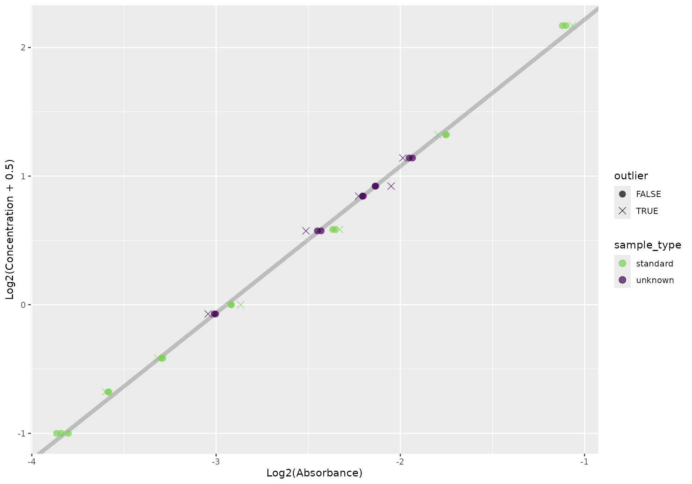

Quantifying protein with qp
quantifying-protein-with-qp.RmdIntroduction
The Micro BCA assay and its analysis is easy and straightforward. With most lab work, though, the analysis is typically repetitive. We can analyze these data programmatically to speed up and automate analysis, remove human error, and get reproducibility for free along the way.
qp intends to be no-fuss enough where it analyze routine
runs and flexible enough to make analyzing hairier ones simple enough.
In this vignette, I’ll start with a straightforward data set and move to
a more challenging one to show you the two different approaches to
analyzing protein quantification data using qp.
Routine analysis
The standard qp workflow is based off this
protocol. Provided the protocol is followed, relatively few parameters
need to be changed from their default.
The easiest - and most common - way to read in your data is by
providing a path to your SPECTRAmax file output. These .txt
files are some of the most…creatively…formatted files I’ve come
across.
f <- system.file("extdata", "absorbances.txt", package = "qp")
readLines(f)
#> [1] "##BLOCKS= 2 "
#> [2] "Plate:\tPlate#1\t1.3\tPlateFormat\tEndpoint\tAbsorbance\tRaw\tFALSE\t1\t\t\t\t\t\t1\t562\t1\t12\t96\t1\t8\tNone\t"
#> [3] "\tTemperature(\xa1C)\t1\t2\t3\t4\t5\t6\t7\t8\t9\t10\t11\t12\t\t"
#> [4] "\t37.00\t0.0686\t0.0717\t0.0698\t0.2415\t0.228\t0.2273\t0.0475\t0.0459\t0.0485\t0.0487\t0.0474\t0.0464\t\t"
#> [5] "\t\t0.0825\t0.0832\t0.0835\t0.183\t0.1856\t0.1753\t0.0487\t0.0464\t0.048\t0.0465\t0.0468\t0.047\t\t"
#> [6] "\t\t0.1023\t0.1004\t0.1017\t0.2175\t0.2137\t0.2168\t0.0475\t0.0471\t0.0475\t0.047\t0.0474\t0.0472\t\t"
#> [7] "\t\t0.1322\t0.1324\t0.1371\t0.1241\t0.1248\t0.1213\t0.0482\t0.0475\t0.0476\t0.0477\t0.0474\t0.0479\t\t"
#> [8] "\t\t0.1955\t0.199\t0.1938\t0.0478\t0.0455\t0.0508\t0.046\t0.0465\t0.0479\t0.0512\t0.0477\t0.0465\t\t"
#> [9] "\t\t0.2963\t0.2878\t0.2974\t0.046\t0.0467\t0.0462\t0.0465\t0.0477\t0.0455\t0.0456\t0.0467\t0.046\t\t"
#> [10] "\t\t0.4599\t0.4662\t0.4779\t0.0472\t0.0455\t0.0464\t0.0473\t0.0464\t0.0493\t0.0451\t0.0463\t0.0466\t\t"
#> [11] "\t\t0.2617\t0.2524\t0.2584\t0.0461\t0.0463\t0.0469\t0.0448\t0.0465\t0.0464\t0.0477\t0.0472\t0.0457\t\t"
#> [12] "\t\t"
#> [13] "~End"
#> [14] "Original Filename: Untitled Date Last Saved: Unsaved"
#> [15] "Copyright \xa9 2003 Molecular Devices. All rights reserved."Fortunately, I’ve developed a little package mop that
reads in lab data like these. This is used in the qp
function when you provide it a character string.
Typically when you perform these experiments, you will know how it was laid out. In these data I’m providing, though, I’ll need to show you how it’s laid out so that you can follow along why I set some parameters the way I do.
This is how the plate looks:

The samples are laid out in triplicate, horizontally arranged replicates in vertical bands that wrap to the next three columns once it hits the edge of the plate.

Furthermore, I have my seven standards in the top left corner of the plate, in ascending concentrations as they flow down the first column. The samples follow. The rest of the wells are empty:

Since we followed the standard protocol, and since I told you replicates were arranged horizontally, analysis is a breeze:
out <- qp(f, replicate_orientation = "h")
#> Please wait. This will take ~10 seconds.We can plot our standards and samples simply, using
qp_plot_standards:
qp_plot_standards(out)
And we can get a summary of the concentrations using
qp_summarize:
summary <- qp_summarize(out)
summary
#> # A tibble: 12 × 3
#> .sample_name sample_type .mean_pred_conc
#> <chr> <fct> <dbl>
#> 1 Standard 1 standard -0.00623
#> 2 Standard 2 standard 0.102
#> 3 Standard 3 standard 0.258
#> 4 Standard 4 standard 0.520
#> 5 Standard 5 standard 1.08
#> 6 Standard 6 standard 2.06
#> 7 Standard 7 standard 3.76
#> 8 1 unknown 1.71
#> 9 2 unknown 1.39
#> 10 3 unknown 0.989
#> 11 4 unknown 1.30
#> 12 5 unknown 0.451We can also calculate dilutions from this summary. By default, it will use the lowest concentration of the samples and a final volume of 15uL:
summary |> qp_dilute()
#> `target_conc` is missing, using lowest sample concentration
#> # A tibble: 12 × 5
#> .sample_name sample_type .mean_pred_conc sample_to_add add_to
#> <chr> <fct> <dbl> <dbl> <dbl>
#> 1 Standard 1 standard -0.00623 -1088 1103
#> 2 Standard 2 standard 0.102 66.2 -51.2
#> 3 Standard 3 standard 0.258 26.2 -11.2
#> 4 Standard 4 standard 0.520 13.0 1.98
#> 5 Standard 5 standard 1.08 6.24 8.76
#> 6 Standard 6 standard 2.06 3.28 11.7
#> 7 Standard 7 standard 3.76 1.8 13.2
#> 8 1 unknown 1.71 3.97 11.0
#> 9 2 unknown 1.39 4.85 10.1
#> 10 3 unknown 0.989 6.85 8.15
#> 11 4 unknown 1.30 5.23 9.77
#> 12 5 unknown 0.451 15 0When things go wrong
Occasionally, your experiment won’t go perfectly - maybe you mixed up
the order of the standards, or could can’t run samples with technical
replicates. In this case, you can run the functions that qp
runs individually, maybe doing a little data munging between steps.
Most functions depend on a previous function being run. See the following hierarchy to see what functions depend on what:
Reading in the data
There are a couple ways of going about doing this. Depending on how
borked your plate is, the most straightforward way may be to create a
data.frame with columns sample_type (which
should contain standard or unknown),
index (which denotes the standard or sample number), and
.abs (the absorbances at - hopefully but not necessarily -
562nm):
standards <- data.frame(
sample_type = "standard",
index = rep(1:7, each = 2),
abs = c(0.071, 0.079, 0.08, 0.082,
0.1, 0.099, 0.15, 0.147,
0.22, 0.215, 0.50, 0.48, 0.78, 0.79))
unknowns <- data.frame(sample_type = "unknown", index = 1, abs = 0.25)
data <- rbind(standards, unknowns)
data
#> sample_type index abs
#> 1 standard 1 0.071
#> 2 standard 1 0.079
#> 3 standard 2 0.080
#> 4 standard 2 0.082
#> 5 standard 3 0.100
#> 6 standard 3 0.099
#> 7 standard 4 0.150
#> 8 standard 4 0.147
#> 9 standard 5 0.220
#> 10 standard 5 0.215
#> 11 standard 6 0.500
#> 12 standard 6 0.480
#> 13 standard 7 0.780
#> 14 standard 7 0.790
#> 15 unknown 1 0.250Admittedly, this does destroy the whole ‘reproducibility’ aspect of
it. Another way of going doing this is via gplate
library(mop)
f <- system.file("extdata", "absorbances.txt", package = "qp")
spectramax <- read_spectramax(f)
#> Please wait. This will take ~10 seconds.
spectramax
#> <spectramax[5]>
#> [[1]]
#> [[1]]$data
#>
#> 12
#> ________________________
#> | ◯ ◯ ◯ ◯ ◯ ◯ ◯ ◯ ◯ ◯ ◯ ◯
#> | ◯ ◯ ◯ ◯ ◯ ◯ ◯ ◯ ◯ ◯ ◯ ◯
#> | ◯ ◯ ◯ ◯ ◯ ◯ ◯ ◯ ◯ ◯ ◯ ◯
#> | ◯ ◯ ◯ ◯ ◯ ◯ ◯ ◯ ◯ ◯ ◯ ◯
#> 8 | ◯ ◯ ◯ ◯ ◯ ◯ ◯ ◯ ◯ ◯ ◯ ◯
#> | ◯ ◯ ◯ ◯ ◯ ◯ ◯ ◯ ◯ ◯ ◯ ◯
#> | ◯ ◯ ◯ ◯ ◯ ◯ ◯ ◯ ◯ ◯ ◯ ◯
#> | ◯ ◯ ◯ ◯ ◯ ◯ ◯ ◯ ◯ ◯ ◯ ◯
#>
#>
#> Start corner: tl
#> Plate dimensions: 8 x 12
#>
#> [[1]]$type
#> [1] "Plate"
#>
#> [[1]]$wavelengths
#> [1] "562"
#>
#>
#> # Wavelengths: 562
#> # Is tidy: TRUE
#> # Date: 2023-11-04We can extract the gp from the spectramax
object via:
# I know it's ugly syntax - I'll work on it. Later.
gp <- spectramax$data[[1]]$data
gp
#>
#> 12
#> ________________________
#> | ◯ ◯ ◯ ◯ ◯ ◯ ◯ ◯ ◯ ◯ ◯ ◯
#> | ◯ ◯ ◯ ◯ ◯ ◯ ◯ ◯ ◯ ◯ ◯ ◯
#> | ◯ ◯ ◯ ◯ ◯ ◯ ◯ ◯ ◯ ◯ ◯ ◯
#> | ◯ ◯ ◯ ◯ ◯ ◯ ◯ ◯ ◯ ◯ ◯ ◯
#> 8 | ◯ ◯ ◯ ◯ ◯ ◯ ◯ ◯ ◯ ◯ ◯ ◯
#> | ◯ ◯ ◯ ◯ ◯ ◯ ◯ ◯ ◯ ◯ ◯ ◯
#> | ◯ ◯ ◯ ◯ ◯ ◯ ◯ ◯ ◯ ◯ ◯ ◯
#> | ◯ ◯ ◯ ◯ ◯ ◯ ◯ ◯ ◯ ◯ ◯ ◯
#>
#>
#> Start corner: tl
#> Plate dimensions: 8 x 12And then we can carve out rectangular sections using
gplate::gp_excise:
library(dplyr)
#>
#> Attaching package: 'dplyr'
#> The following objects are masked from 'package:stats':
#>
#> filter, lag
#> The following objects are masked from 'package:base':
#>
#> intersect, setdiff, setequal, union
library(gplate)
standards <- gp |>
gp_excise(top = 1, left = 1, bottom = 7, right = 2) |>
gp_serve() |>
mutate(
sample_type = "standard",
index = rep(1:7, each = 2)
)
samples <- gp |>
gp_excise(top = 1, left = 4, bottom = 1, right = 4) |>
gp_serve() |>
mutate(
sample_type = "unknown",
index = 1
)
data <- rbind(standards, samples) |>
rename(.abs = nm562)
data
#> # A tibble: 15 × 5
#> .row .col .abs sample_type index
#> <int> <int> <dbl> <chr> <dbl>
#> 1 1 1 0.0686 standard 1
#> 2 1 2 0.0717 standard 1
#> 3 2 1 0.0825 standard 2
#> 4 2 2 0.0832 standard 2
#> 5 3 1 0.102 standard 3
#> 6 3 2 0.100 standard 3
#> 7 4 1 0.132 standard 4
#> 8 4 2 0.132 standard 4
#> 9 5 1 0.196 standard 5
#> 10 5 2 0.199 standard 5
#> 11 6 1 0.296 standard 6
#> 12 6 2 0.288 standard 6
#> 13 7 1 0.460 standard 7
#> 14 7 2 0.466 standard 7
#> 15 1 1 0.242 unknown 1Adding standard concentrations
Suppose you accidentally made your highest standard twice as concentrated. That’s a simple fix. Instead of using the standard standards:
c(0, 2^((2:7) - 5))
#> [1] 0.000 0.125 0.250 0.500 1.000 2.000 4.000You can set your own:
c(0, 2^((2:6) - 5), 8)
#> [1] 0.000 0.125 0.250 0.500 1.000 2.000 8.000and use them as an argument in qp_add_std_conc:
qp_add_std_conc(data, c(0, 2^((2:6) - 5), 8))
#> # A tibble: 15 × 6
#> .row .col .abs sample_type index .conc
#> <int> <int> <dbl> <chr> <dbl> <dbl>
#> 1 1 1 0.0686 standard 1 0
#> 2 1 2 0.0717 standard 1 0
#> 3 2 1 0.0825 standard 2 0.125
#> 4 2 2 0.0832 standard 2 0.125
#> 5 3 1 0.102 standard 3 0.25
#> 6 3 2 0.100 standard 3 0.25
#> 7 4 1 0.132 standard 4 0.5
#> 8 4 2 0.132 standard 4 0.5
#> 9 5 1 0.196 standard 5 1
#> 10 5 2 0.199 standard 5 1
#> 11 6 1 0.296 standard 6 2
#> 12 6 2 0.288 standard 6 2
#> 13 7 1 0.460 standard 7 8
#> 14 7 2 0.466 standard 7 8
#> 15 1 1 0.242 unknown 1 NAYou can specify them as strangely as you want:
qp_add_std_conc(data, c(1, 7, 26, 0.4, 2, 1, 1))
#> # A tibble: 15 × 6
#> .row .col .abs sample_type index .conc
#> <int> <int> <dbl> <chr> <dbl> <dbl>
#> 1 1 1 0.0686 standard 1 1
#> 2 1 2 0.0717 standard 1 1
#> 3 2 1 0.0825 standard 2 7
#> 4 2 2 0.0832 standard 2 7
#> 5 3 1 0.102 standard 3 26
#> 6 3 2 0.100 standard 3 26
#> 7 4 1 0.132 standard 4 0.4
#> 8 4 2 0.132 standard 4 0.4
#> 9 5 1 0.196 standard 5 2
#> 10 5 2 0.199 standard 5 2
#> 11 6 1 0.296 standard 6 1
#> 12 6 2 0.288 standard 6 1
#> 13 7 1 0.460 standard 7 1
#> 14 7 2 0.466 standard 7 1
#> 15 1 1 0.242 unknown 1 NACalculating absorbance means
At some point - either before or after calculating your standard
concentrations - you’ll need to calculate the means of your absorbances.
In an Excel based format, you might manually remove outliers - but what
counts as an ‘outlier’ is somewhat arbitrary in that setting. You can
optionally remove outliers in a systematic way with qp:
some_abs <- absorbances[c(1:5, 21:26),]
some_abs |>
qp_calc_abs_mean(ignore_outliers = "none")
#> # A tibble: 11 × 7
#> .row .col .abs sample_type index .is_outlier .mean
#> <int> <dbl> <dbl> <fct> <dbl> <lgl> <dbl>
#> 1 1 1 0.0707 standard 1 NA 0.0736
#> 2 2 1 0.0786 standard 1 NA 0.0736
#> 3 3 1 0.0714 standard 1 NA 0.0736
#> 4 1 2 0.0795 standard 2 NA 0.0797
#> 5 2 2 0.0799 standard 2 NA 0.0797
#> 6 3 7 0.792 standard 7 NA 0.792
#> 7 1 8 0.456 unknown 1 NA 0.457
#> 8 2 8 0.459 unknown 1 NA 0.457
#> 9 3 8 0.455 unknown 1 NA 0.457
#> 10 1 9 0.446 unknown 2 NA 0.444
#> 11 2 9 0.441 unknown 2 NA 0.444
some_abs |>
qp_calc_abs_mean(ignore_outliers = "standards")
#> # A tibble: 11 × 7
#> .row .col .abs sample_type index .is_outlier .mean
#> <int> <dbl> <dbl> <fct> <dbl> <lgl> <dbl>
#> 1 1 1 0.0707 standard 1 FALSE 0.0710
#> 2 2 1 0.0786 standard 1 TRUE 0.0710
#> 3 3 1 0.0714 standard 1 FALSE 0.0710
#> 4 1 2 0.0795 standard 2 FALSE 0.0797
#> 5 2 2 0.0799 standard 2 FALSE 0.0797
#> 6 3 7 0.792 standard 7 FALSE 0.792
#> 7 1 8 0.456 unknown 1 NA 0.457
#> 8 2 8 0.459 unknown 1 NA 0.457
#> 9 3 8 0.455 unknown 1 NA 0.457
#> 10 1 9 0.446 unknown 2 NA 0.444
#> 11 2 9 0.441 unknown 2 NA 0.444
some_abs |>
qp_calc_abs_mean(ignore_outliers = "samples")
#> # A tibble: 11 × 7
#> .row .col .abs sample_type index .is_outlier .mean
#> <int> <dbl> <dbl> <fct> <dbl> <lgl> <dbl>
#> 1 1 1 0.0707 standard 1 NA 0.0736
#> 2 2 1 0.0786 standard 1 NA 0.0736
#> 3 3 1 0.0714 standard 1 NA 0.0736
#> 4 1 2 0.0795 standard 2 NA 0.0797
#> 5 2 2 0.0799 standard 2 NA 0.0797
#> 6 3 7 0.792 standard 7 NA 0.792
#> 7 1 8 0.456 unknown 1 FALSE 0.455
#> 8 2 8 0.459 unknown 1 TRUE 0.455
#> 9 3 8 0.455 unknown 1 FALSE 0.455
#> 10 1 9 0.446 unknown 2 FALSE 0.444
#> 11 2 9 0.441 unknown 2 FALSE 0.444
some_abs |>
qp_calc_abs_mean(ignore_outliers = "all")
#> # A tibble: 11 × 7
#> .row .col .abs sample_type index .is_outlier .mean
#> <int> <dbl> <dbl> <fct> <dbl> <lgl> <dbl>
#> 1 1 1 0.0707 standard 1 FALSE 0.0710
#> 2 2 1 0.0786 standard 1 TRUE 0.0710
#> 3 3 1 0.0714 standard 1 FALSE 0.0710
#> 4 1 2 0.0795 standard 2 FALSE 0.0797
#> 5 2 2 0.0799 standard 2 FALSE 0.0797
#> 6 3 7 0.792 standard 7 FALSE 0.792
#> 7 1 8 0.456 unknown 1 FALSE 0.455
#> 8 2 8 0.459 unknown 1 TRUE 0.455
#> 9 3 8 0.455 unknown 1 FALSE 0.455
#> 10 1 9 0.446 unknown 2 FALSE 0.444
#> 11 2 9 0.441 unknown 2 FALSE 0.444Something is an outlier if it is over 3 standard deviations away from the mean of the others. While this might mark things as outliers that you might not (perhaps because the other two samples were just ultra close to each other), it only has a downstream effect if these outliers are truly much different from the others.
Fitting a model
Once the above steps have been completed, you can fit a simple linear model:
out <- absorbances |>
qp_add_std_conc() |> # all values are defaults
qp_calc_abs_mean() |>
qp_fit()
#> Warning: `sample_type` contains values other than `standard` and `unknown`
#> ! These values may be ignored downstream!
#> Did not find column `.log2_abs`, calculating.
out
#> $fit
#>
#> Call:
#> stats::lm(formula = .log2_conc ~ .log2_abs, data = fit_data)
#>
#> Coefficients:
#> (Intercept) .log2_abs
#> 2.378 0.850
#>
#>
#> $qp
#> # A tibble: 88 × 9
#> .row .col .abs sample_type index .conc .is_outlier .mean .log2_abs
#> <int> <dbl> <dbl> <fct> <dbl> <dbl> <lgl> <dbl> <dbl>
#> 1 1 1 0.0707 standard 1 0 FALSE 0.0710 -3.82
#> 2 2 1 0.0786 standard 1 0 TRUE 0.0710 -3.67
#> 3 3 1 0.0714 standard 1 0 FALSE 0.0710 -3.81
#> 4 1 2 0.0795 standard 2 0.125 FALSE 0.0800 -3.65
#> 5 2 2 0.0799 standard 2 0.125 FALSE 0.0800 -3.65
#> 6 3 2 0.0805 standard 2 0.125 FALSE 0.0800 -3.63
#> 7 1 3 0.0999 standard 3 0.25 FALSE 0.0977 -3.32
#> 8 2 3 0.0955 standard 3 0.25 FALSE 0.0977 -3.39
#> 9 3 3 0.0976 standard 3 0.25 FALSE 0.0977 -3.36
#> 10 1 4 0.151 standard 4 0.5 TRUE 0.148 -2.72
#> # ℹ 78 more rowsPredicting concentrations
conc <- qp_calc_conc(out)
conc
#> $fit
#>
#> Call:
#> stats::lm(formula = .log2_conc ~ .log2_abs, data = fit_data)
#>
#> Coefficients:
#> (Intercept) .log2_abs
#> 2.378 0.850
#>
#>
#> $qp
#> # A tibble: 88 × 12
#> .row .col .abs sample_type index .conc .is_outlier .mean .log2_abs
#> <int> <dbl> <dbl> <fct> <dbl> <dbl> <lgl> <dbl> <dbl>
#> 1 1 1 0.0707 standard 1 0 FALSE 0.0710 -3.82
#> 2 2 1 0.0786 standard 1 0 TRUE 0.0710 -3.67
#> 3 3 1 0.0714 standard 1 0 FALSE 0.0710 -3.81
#> 4 1 2 0.0795 standard 2 0.125 FALSE 0.0800 -3.65
#> 5 2 2 0.0799 standard 2 0.125 FALSE 0.0800 -3.65
#> 6 3 2 0.0805 standard 2 0.125 FALSE 0.0800 -3.63
#> 7 1 3 0.0999 standard 3 0.25 FALSE 0.0977 -3.32
#> 8 2 3 0.0955 standard 3 0.25 FALSE 0.0977 -3.39
#> 9 3 3 0.0976 standard 3 0.25 FALSE 0.0977 -3.36
#> 10 1 4 0.151 standard 4 0.5 TRUE 0.148 -2.72
#> # ℹ 78 more rows
#> # ℹ 3 more variables: .pred <dbl>, .pred_conc <dbl>, .pred_conc_mean <dbl>Removing empty wells
Samples that have a predicted concentration lower than 0 can be
removed easily using qp_remove_empty:
conc$qp |> tail()
#> # A tibble: 6 × 12
#> .row .col .abs sample_type index .conc .is_outlier .mean .log2_abs .pred
#> <int> <dbl> <dbl> <fct> <dbl> <dbl> <lgl> <dbl> <dbl> <dbl>
#> 1 7 6 0.048 unknown NA NA FALSE 0.0485 -4.38 -1.35
#> 2 8 6 0.0469 unknown NA NA FALSE 0.0485 -4.41 -1.37
#> 3 7 7 0.0499 unknown NA NA FALSE 0.0485 -4.32 -1.30
#> 4 8 7 0.0483 unknown NA NA FALSE 0.0485 -4.37 -1.34
#> 5 7 8 0.0485 unknown NA NA FALSE 0.0485 -4.37 -1.33
#> 6 8 8 0.0487 unknown NA NA FALSE 0.0485 -4.36 -1.33
#> # ℹ 2 more variables: .pred_conc <dbl>, .pred_conc_mean <dbl>
no_zero <- qp_remove_empty(conc)
no_zero$qp |> tail()
#> # A tibble: 6 × 12
#> .row .col .abs sample_type index .conc .is_outlier .mean .log2_abs .pred
#> <int> <dbl> <dbl> <fct> <dbl> <dbl> <lgl> <dbl> <dbl> <dbl>
#> 1 4 2 0.379 unknown 7 NA FALSE 0.378 -1.40 1.19
#> 2 5 2 0.370 unknown 7 NA TRUE 0.378 -1.44 1.16
#> 3 6 2 0.376 unknown 7 NA FALSE 0.378 -1.41 1.18
#> 4 4 3 0.228 unknown 8 NA TRUE 0.218 -2.13 0.565
#> 5 5 3 0.217 unknown 8 NA FALSE 0.218 -2.20 0.504
#> 6 6 3 0.220 unknown 8 NA FALSE 0.218 -2.19 0.520
#> # ℹ 2 more variables: .pred_conc <dbl>, .pred_conc_mean <dbl>Note that this typically won’t remove wells that have the BCA solution in it but have no sample.
Adding sample names
At any point, you can add sample names to the data - each index gets its own sample name.
with_names <- no_zero |> qp_add_names(paste0("my_sample_", letters[1:8]))
with_names$qp |> tail()
#> # A tibble: 6 × 13
#> .row .col .abs sample_type index .conc .is_outlier .mean .log2_abs .pred
#> <int> <dbl> <dbl> <fct> <dbl> <dbl> <lgl> <dbl> <dbl> <dbl>
#> 1 4 2 0.379 unknown 7 NA FALSE 0.378 -1.40 1.19
#> 2 5 2 0.370 unknown 7 NA TRUE 0.378 -1.44 1.16
#> 3 6 2 0.376 unknown 7 NA FALSE 0.378 -1.41 1.18
#> 4 4 3 0.228 unknown 8 NA TRUE 0.218 -2.13 0.565
#> 5 5 3 0.217 unknown 8 NA FALSE 0.218 -2.20 0.504
#> 6 6 3 0.220 unknown 8 NA FALSE 0.218 -2.19 0.520
#> # ℹ 3 more variables: .pred_conc <dbl>, .pred_conc_mean <dbl>,
#> # .sample_name <chr>